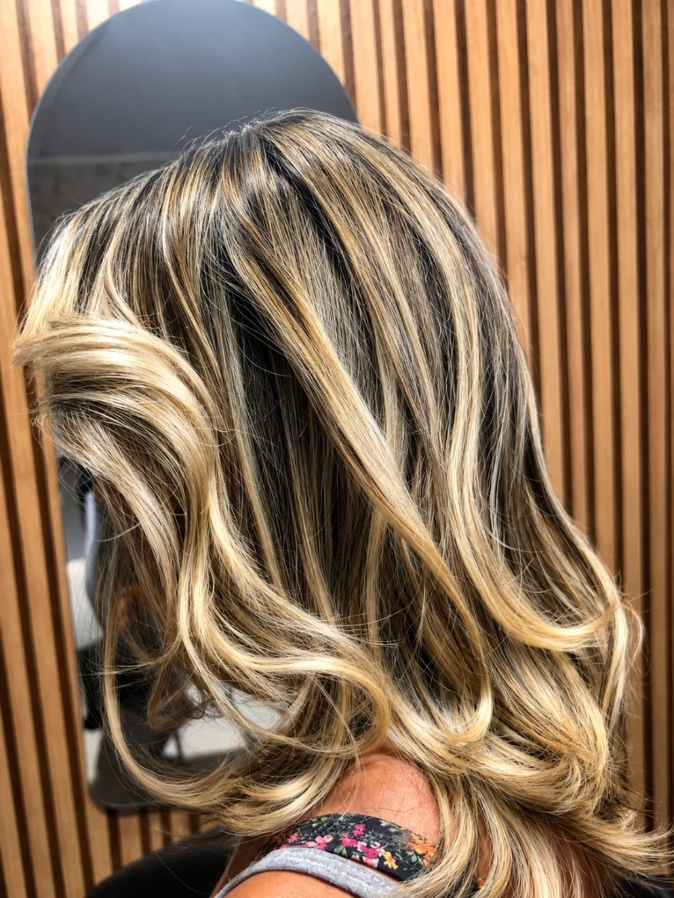
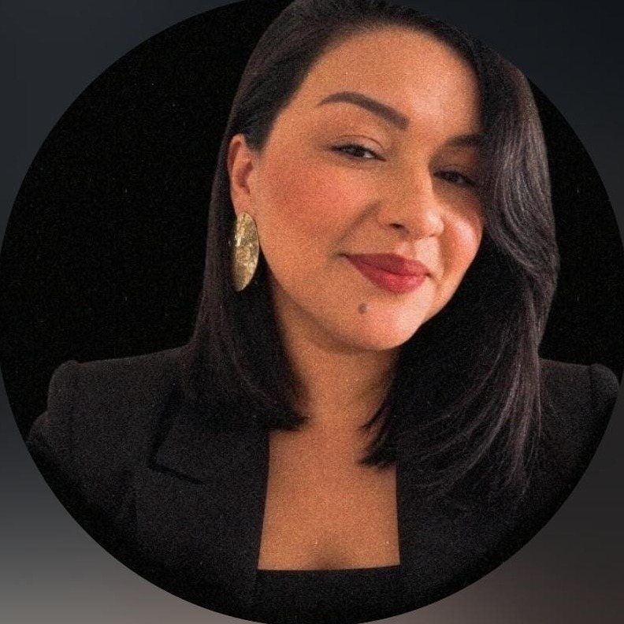
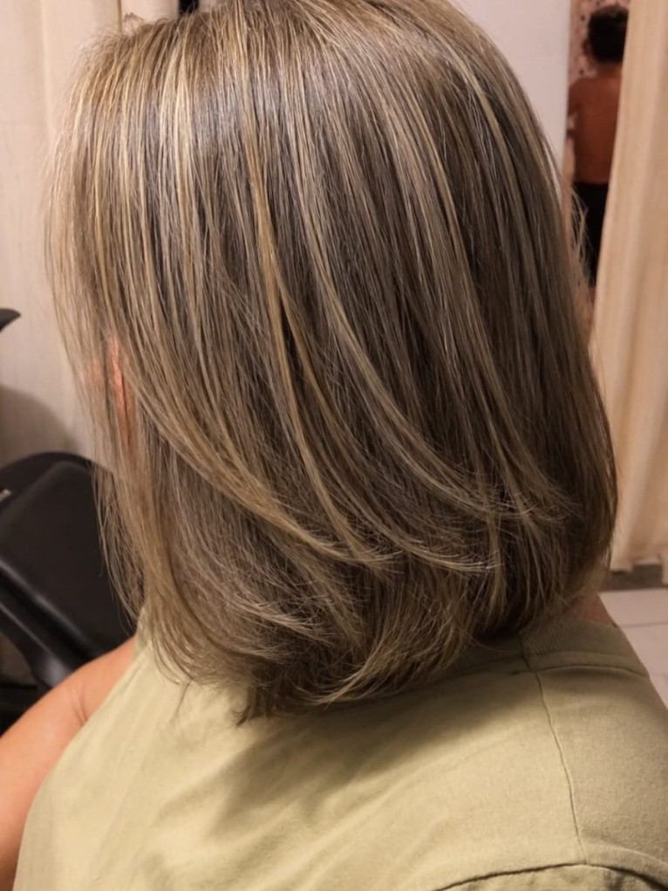
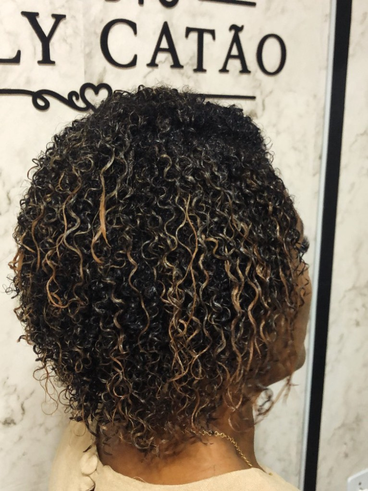
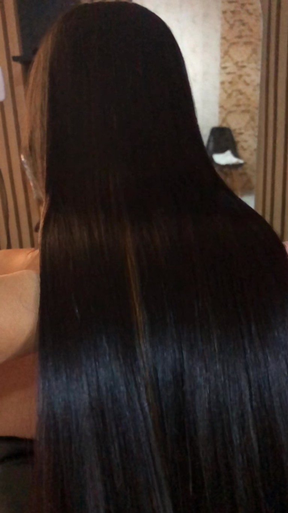

Hairstylist Lauro de Freitas
Seu cabelo merece um cuidado só seu.
Loiros perolados, mechas iluminadas e cabelos com brilho de verdade — com atendimento exclusivo, no Studio Jully Catão.
Clientes que voltam e indicam
- Atendimento exclusivo
- Especialista em loiros
- Produtos profissionais
- Hora marcada
- Lauro de Freitas – BA

Juliane Catão Hairstylist
Sobre mim
Paixão por transformar. Cuidado só seu.
Sou a Juliane Catão, cabeleireira apaixonada por transformação. Cada cliente que senta na minha cadeira sai com mais do que um cabelo bonito: sai com a autoestima lá em cima.
É por isso que meu atendimento é exclusivo — do diagnóstico ao finalizado, seu horário é só seu.
Juliane Catão
Agendar com a JulianeEspecialidades
Cada fio pensado para valorizar você.
-
-

-

-

Transformações reais
Brilho, luz e movimento que saem da cadeira da Jully direto para o seu dia a dia.
Sua transformação pode ser a próxima.
Quero minha transformaçãoPor que o Studio Jully Catão
-
Atendimento exclusivo
Seu horário é só seu, com atenção total do início ao fim.
-
Especialista em transformação
Do preto ao ruivo, do escuro ao loiro perolado.
-
Cuidado com a saúde do fio
Técnica e produtos profissionais para um resultado que dura.
Quem viveu, recomenda
Eu tinha medo de clarear e estragar o cabelo. Saí com o loiro perolado que eu sonhava, com o fio macio e cheio de brilho. Atendimento impecável do começo ao fim.
A Jully entendeu exatamente o que eu queria. Meus cachos ficaram iluminados sem perder a definição, e a minha autoestima foi lá em cima.
Horário só meu, sem pressa e sem correria. Saí com o cabelo alinhado e um brilho que todo mundo elogiou. Já marquei a próxima.
Agendar é simples
-
Clique no botão
Qualquer botão verde da página abre o WhatsApp do studio.
-
Conte o que você deseja
Mande uma foto do seu cabelo e o resultado que você sonha.
-
Escolha seu horário
A Jully confirma o dia e a hora reservados só para você.
Perguntas frequentes
Ficou alguma dúvida? A Jully responde tudo pelo WhatsApp.
É só tocar em qualquer botão verde desta página. Você cai direto no WhatsApp do studio, conta o que deseja e a Jully confirma o melhor dia e horário para você.
Em Lauro de Freitas – BA. O endereço completo é enviado pelo WhatsApp junto com a confirmação do seu horário.
Depende do comprimento, da cor atual e do resultado que você deseja. Uma transformação para o loiro costuma levar algumas horas — por isso cada horário é exclusivo, sem pressa.
Para mudanças maiores, como sair do escuro para o loiro, a Jully avalia o seu fio antes de começar. Muitas vezes isso pode ser feito pelo próprio WhatsApp, com fotos do seu cabelo atual.
Lauro de Freitas – BA
Atendimento com hora marcada
O endereço completo do studio é enviado pelo WhatsApp junto com a confirmação do seu horário.
Studio Jully Catão
Mapa ilustrativo
Pronta para a sua ?
As vagas da agenda são limitadas. Garanta seu horário agora.
Agendar pelo WhatsApp